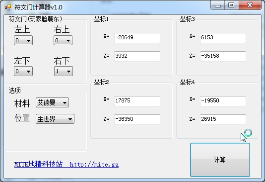
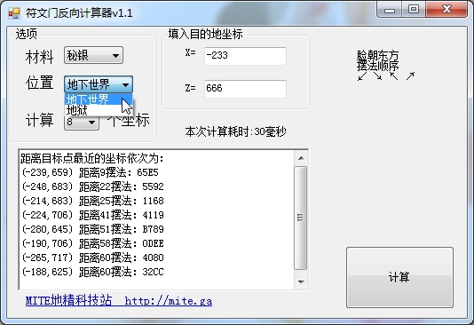
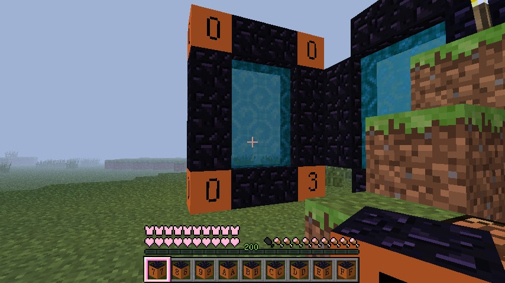

本计划已经完成!
数据穷举作者：_喵Plus_。


符文门计算器下载地址一
符文门反向计算器下载地址二
Q1:为什么符文门反向计算器限制在地下世界和地狱？
A1:由于主世界传送算法是
按顺序在坐标1、2、3、4里挑一个不是海洋地形的
如果都是海，那就把你送到4那边，
因此假设你算出坐标3是最近的，
他把你传送到坐标2，你也没辙
而地下世界没海，必定传坐标1
地下世界的坐标1和主世界坐标1一一对应
地狱世界现已添加！
Q2:摆法显示的那些字母数字啥意思啊？
A2:请通读下文的“规定”
Q3:地下世界没有太阳怎么辨认方向？
A3:本站的材质包，圆石放在地上
上表面有个黑点，那个边方向是北
或者使用坐标获取软件，x增大的方向为东
Q4:三个世界的坐标有关系吗？
A4:主世界=地下世界=地狱*8
Q5:地下世界传送过去没有门，怎么回去？
A5:请带铁镐、打火石与10个黑曜石，靴靴
Q6:为什么一直强调脸朝东？
A6:相反的方向，左右会反啊!（四角符号一样的除外
事实上，东=北，西=南
面朝四个方向的门，只会去两个地方（四角符号一样的除外
Q7:怎样建一个从出生点到末地要塞的快速通道？
A7:首先获取末地要塞坐标，没去过的也可以估算
用符文门反向计算器得到目标点最近的符文门摆法
带上稿子、打火石、10个黑曜石去地下世界
脸朝东摆符文门，传送过去，建普通门到主世界
拆主世界的门装回去，可回出生点
当然末地可以从末影龙的门回去
Q8:看了坐标分布图，我要去的在圆里，附近没有门怎么办？
A8:你忘了主世界坐标=地狱坐标*8吗
利用地狱秘银符文门系统可以覆盖到32768的主世界范围
利用地狱艾德曼符文门系统最远可以传送到262144的主世界范围
大胆的测试吧，反正可以Save Load
核心算法摘要
int seed = getRunegateSeed(world, x, y, z);//调用上面获取种子的函数
...
Random random = new Random(seed);//使用seed初始化随机数种子
...
if (attempts >= 4) //尝试到4次跳出循环
break;
do{
x = random.nextInt(runegate_domain_radius * 2) - runegate_domain_radius;
z = random.nextInt(runegate_domain_radius * 2) - runegate_domain_radius;
if (world.a(x, z) != acq.b)//如果区块类型不是acq.b则跳出
break;
attempts++;
}while(true);
为了统一，现规定：
①所有的符文门是玩家面朝东（即太阳升起的方向，x轴增大的方向）所建立的。
②符文门四角材料需相同
③使用十六进制标注符文石16个符号
0="Nul"
1="Quas"
2="Por"
3="An"
4="Nox"
5="Flam"
6="Vas"
7="Des"
8="Ort"
9="Tym"
A="Corp"
B="Lor"
C="Mani"
D="Jux"
E="Ylem"
F="Sanct"
④坐标获取软件获取的坐标X,Z值，小数部分：正数去尾，负数进一
⑤记录顺序更为左下、右下、左上、右上、X坐标、Z坐标
⑥为方便测试，建议使用修改后的材质包，详情点击这里
效果如下，
